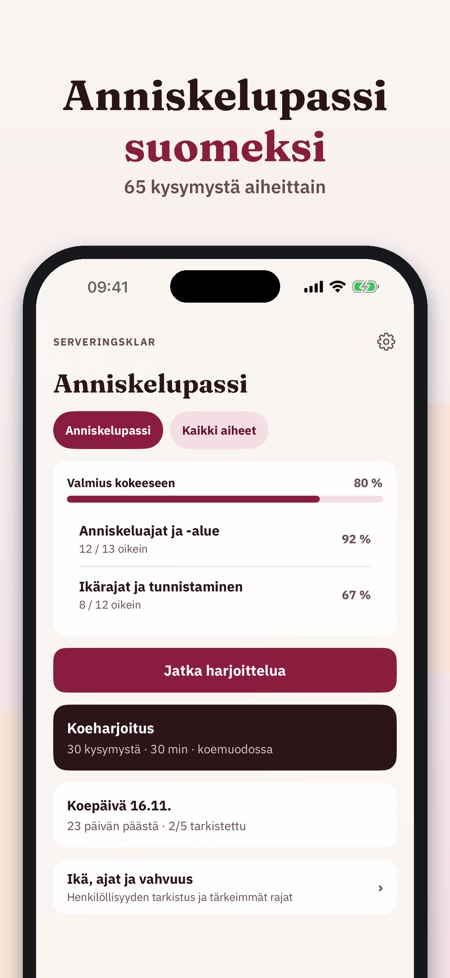
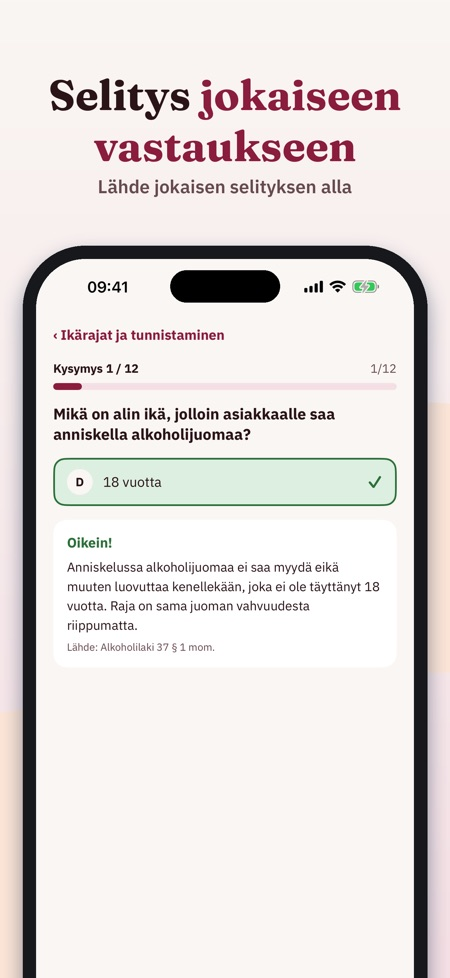
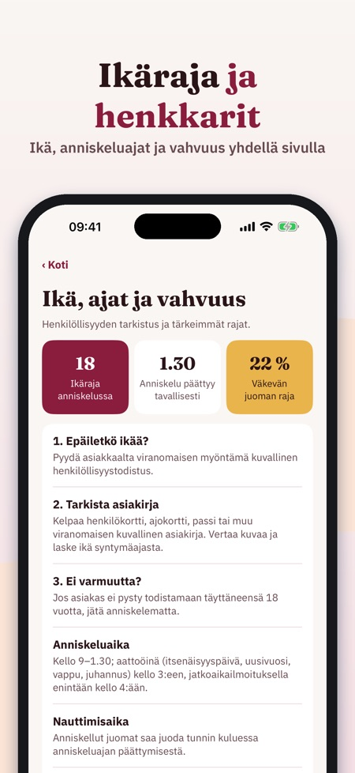

Serveringsklar auttaa harjoittelemaan anniskelupassikoetta aiheittain, ja jokaiseen kysymykseen on selitys. Sovellus toimii myös ilman nettiä.



Se on sovellus anniskelupassikokeen harjoitteluun suomeksi. Kysymykset on jaoteltu aiheittain ja jokaisella on selitys.
Kyllä, sovellus toimii ilman nettiä.
Mukana ovat kysymykset aiheittain, ikärajat, anniskeluajat ja vahvuudet sekä sanasto tärkeimmistä käsitteistä.
Voit harjoitella 20 kysymystä, sanastoa ja tarkistuslistaa ilman ostoa.
Ei. Täysi versio on kertaosto, joka avaa kaikki kysymykset, koeharjoitukset ja tilastot. Tilausta ei ole.
Ei. Serveringsklar on itsenäinen eikä liity viranomaisiin tai kokeen järjestäjiin. Kokeen teet hyväksytyllä järjestäjällä.
Serveringsklar auttaa harjoittelemaan anniskelupassikoetta – aiheittain, selitys jokaiseen kysymykseen.
Voit harjoitella 20 kysymystä, sanastoa ja tarkistuslistaa ilman ostoa. Täysi versio on kertaosto, joka avaa kaikki kysymykset, koeharjoitukset ja tilastot. Ei tilausta.
Serveringsklar on itsenäinen eikä liity Lupa- ja valvontavirastoon, muihin viranomaisiin tai kokeen järjestäjiin. Kokeen teet hyväksytyllä järjestäjällä.